Lecciones de circuitos eléctricos - Volumen IV
Capítulo 5
RELÉS ELECTROMECÁNICOS
Relay construction
Una corriente eléctrica a través de un conductor producirá un campo magnético en ángulo recto con la dirección del flujo de electrones. Si ese conductor se envuelve en forma de bobina, el campo magnético producido se orientará a lo largo de la bobina. Cuanto mayor es la corriente, mayor es la intensidad del campo magnético, siendo iguales todos los demás factores:
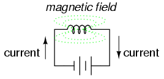
Los inductores reaccionan contra los cambios de corriente debido a la energía almacenada en este campo magnético. Cuando construimos un transformador a partir de dos bobinas inductoras alrededor de un núcleo de hierro común, utilizamos este campo para transferir energía de una bobina a la otra. Sin embargo, existen usos más simples y directos para los campos electromagnéticos que las aplicaciones que hemos visto con inductores y transformadores. El campo magnético producido por una bobina de alambre que transporta corriente se puede usar para ejercer una fuerza mecánica sobre cualquier objeto magnético, del mismo modo que podemos usar un imán permanente para atraer objetos magnéticos, excepto que este imán (formado por la bobina) se puede encender o apagar encendiendo o apagando la corriente a través de la bobina.
Si colocamos un objeto magnético cerca de dicha bobina con el fin de hacer que ese objeto se mueva cuando energizamos la bobina con corriente eléctrica, tenemos lo que se llama unasolenoide. El objeto magnético móvil se llamaarmadura, y la mayoría de las armaduras se pueden mover con corriente continua (CC) o corriente alterna (CA) que energiza la bobina. La polaridad del campo magnético es irrelevante para atraer una armadura de hierro. Los solenoides se pueden utilizar para abrir eléctricamente pestillos de puertas, abrir o cerrar válvulas, mover miembros robóticos e incluso accionar mecanismos de interruptores eléctricos. Sin embargo, si se utiliza un solenoide para accionar un conjunto de contactos de interruptor, tenemos un dispositivo tan útil que merece su propio nombre: elrelé.
Los relés son sumamente útiles cuando tenemos la necesidad de controlar una gran cantidad de corriente y/o voltaje con una pequeña señal eléctrica. La bobina del relé que produce el campo magnético puede consumir sólo fracciones de un vatio de potencia, mientras que los contactos cerrados o abiertos por ese campo magnético pueden conducir cientos de veces esa cantidad de energía a una carga. En efecto, un relé actúa como un amplificador binario (encendido o apagado).
Al igual que con los transistores, la capacidad del relé para controlar una señal eléctrica con otra encuentra aplicación en la construcción de funciones lógicas. Este tema se tratará con mayor detalle en otra lección. Por ahora, se explorará la capacidad "amplificadora" del relé.
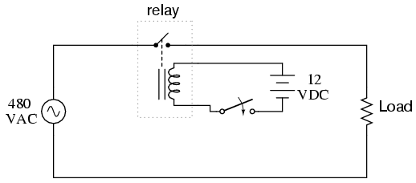
En el esquema anterior, la bobina del relé es energizada por la fuente de bajo voltaje (12 VCC), mientras que el contacto unipolar y unidireccional (SPST) interrumpe el circuito de alto voltaje (480 VCA). Es muy probable que la corriente requerida para energizar la bobina del relé sea cientos de veces menor que la corriente nominal del contacto. Las corrientes típicas de las bobinas de los relés están muy por debajo de 1 amperio, mientras que las clasificaciones de contacto típicas para relés industriales son de al menos 10 amperios.
Se puede utilizar un conjunto de bobina/inducido de relé para accionar más de un conjunto de contactos. Esos contactos pueden estar normalmente abiertos, normalmente cerrados o cualquier combinación de ambos. Al igual que con los interruptores, el estado "normal" de los contactos de un relé es aquel estado en el que la bobina está desenergizada, tal como encontraría el relé en un estante, sin estar conectado a ningún circuito.
Los contactos del relé pueden ser almohadillas al aire libre de aleación metálica, tubos de mercurio o incluso lengüetas magnéticas, al igual que ocurre con otros tipos de interruptores. La elección de contactos en un relé depende de los mismos factores que dictan la elección de contactos en otros tipos de interruptores. Los contactos al aire libre son los mejores para aplicaciones de alta corriente, pero su tendencia a corroerse y producir chispas puede causar problemas en algunos entornos industriales. Los contactos de mercurio y de láminas no producen chispas y no se corroen, pero tienden a tener una capacidad de transporte de corriente limitada.
Aquí se muestran tres pequeños relés (de aproximadamente dos pulgadas de altura, cada uno), instalados en un panel como parte de un sistema de control eléctrico en una planta municipal de tratamiento de agua:
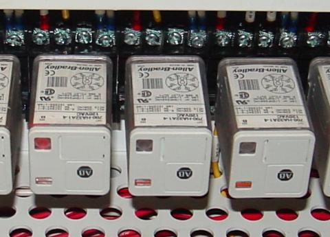
Las unidades de relé que se muestran aquí se denominan "base octal" porque se conectan a enchufes correspondientes y las conexiones eléctricas se aseguran mediante ocho clavijas metálicas en la parte inferior del relé. Las conexiones de terminales de tornillo que ve en la fotografía donde los cables se conectan a los relés son en realidad parte del conjunto del zócalo, al que se conecta cada relé. Este tipo de construcción facilita la extracción y sustitución de los relés en caso de fallo.
Además de la capacidad de permitir que una señal eléctrica relativamente pequeña conmute una señal eléctrica relativamente grande, los relés también ofrecen aislamiento eléctrico entre la bobina y los circuitos de contacto. Esto significa que el circuito de la bobina y el circuito(s) de contacto están eléctricamente aislados entre sí. Un circuito puede ser CC y el otro CA (como en el circuito de ejemplo que se muestra anteriormente) y/o pueden tener niveles de voltaje completamente diferentes, a través de las conexiones o desde las conexiones a tierra.
Si bien los relés son esencialmente dispositivos binarios, ya sea que estén completamente encendidos o completamente apagados, existen condiciones de funcionamiento en las que su estado puede ser indeterminado, al igual que ocurre con las puertas lógicas de semiconductores. Para que un relé "tire" positivamente de la armadura para activar los contactos, debe haber una cierta cantidad mínima de corriente a través de la bobina. Esta cantidad mínima se llamapull-incorriente, y es análogo al voltaje de entrada mínimo que requiere una puerta lógica para garantizar un estado "alto" (normalmente 2 voltios para TTL, 3,5 voltios para CMOS). Sin embargo, una vez que la armadura se acerca al centro de la bobina, se necesita menos flujo de campo magnético (menos corriente de la bobina) para mantenerla allí. Por lo tanto, la corriente de la bobina debe caer por debajo de un valor significativamente menor que la corriente de entrada antes de que la armadura "caiga" a su posición cargada por resorte y los contactos recuperen su estado normal. Este nivel actual se llamaAbandonarcorriente, y es análogo al voltaje de entrada máximo que una entrada de puerta lógica permitirá garantizar un estado "bajo" (normalmente 0,8 voltios para TTL, 1,5 voltios para CMOS).
La histéresis, o diferencia entre las corrientes de entrada y salida, da como resultado un funcionamiento similar a una puerta lógica de disparo Schmitt. Las corrientes (y voltajes) de activación y desactivación varían ampliamente de un relé a otro y las especifica el fabricante.
- REVISAR:
- A solenoideEs un dispositivo que produce movimiento mecánico a partir de la activación de una bobina de electroimán. La parte móvil de un solenoide se llamaarmadura.
- A relées un solenoide configurado para accionar los contactos del interruptor cuando su bobina está energizada.
- Pull-inLa corriente es la cantidad mínima de corriente de bobina necesaria para accionar un solenoide o relé desde su posición "normal" (desenergizada).
- AbandonarLa corriente es la corriente máxima de la bobina por debajo de la cual un relé energizado volverá a su estado "normal".
Contactors
Cuando se utiliza un relé para conmutar una gran cantidad de energía eléctrica a través de sus contactos, se le designa con un nombre especial:contactor. Los contactores generalmente tienen múltiples contactos, y esos contactos generalmente (pero no siempre) están normalmente abiertos, de modo que la energía a la carga se corta cuando la bobina se desenergiza. Quizás el uso industrial más común de los contactores sea el control de motores eléctricos.
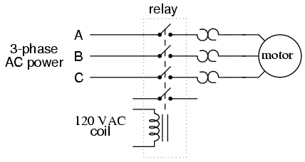
Los tres contactos superiores conmutan las fases respectivas de la alimentación de CA trifásica entrante, normalmente al menos 480 voltios para motores de 1 caballo de fuerza o más. El contacto más bajo es un contacto "auxiliar" que tiene una clasificación de corriente mucho menor que la de los contactos de potencia de motores grandes, pero es accionado por la misma armadura que los contactos de potencia. El contacto auxiliar se utiliza a menudo en un circuito lógico de relé o para alguna otra parte del esquema de control del motor, normalmente conmutando alimentación de 120 voltios CA en lugar del voltaje del motor. Un contactor puede tener varios contactos auxiliares, normalmente abiertos o normalmente cerrados, si es necesario.
Los tres dispositivos con forma de "signo de interrogación opuesto" en serie con cada fase yendo al motor se llamancalentadores de sobrecarga. Cada elemento "calentador" es una tira de metal de baja resistencia destinada a calentarse a medida que el motor consume corriente. Si la temperatura de cualquiera de estos elementos calentadores alcanza un punto crítico (equivalente a una sobrecarga moderada del motor), se abrirá un contacto de interruptor normalmente cerrado (no se muestra en el diagrama). Este contacto normalmente cerrado generalmente está conectado en serie con la bobina del relé, de modo que cuando se abre, el relé se desenergiza automáticamente, cortando así la energía al motor. Veremos más de este cableado de protección contra sobrecargas en el próximo capítulo. Los calentadores de sobrecarga están destinados a brindar protección contra sobrecorriente para motores eléctricos grandes, a diferencia de los disyuntores y fusibles que tienen como objetivo principal brindar protección contra sobrecorriente a los conductores de energía.
A menudo se malinterpreta la función del calentador de sobrecarga. No son fusibles; es decir, no es su función abrir y romper directamente el circuito como está diseñado para hacerlo un fusible. Más bien, los calentadores de sobrecarga están diseñados para imitar térmicamente las características de calentamiento del motor eléctrico particular que se va a proteger. Todos los motores tienen características térmicas, incluida la cantidad de energía térmica generada por la disipación resistiva (I2R), las características de transferencia térmica del calor "conducido" al medio de refrigeración a través de la estructura metálica del motor, la masa física y el calor específico de los materiales que constituyen el motor, etc. Estas características son imitadas por el calentador de sobrecarga en una escala miniatura: cuando el motor se calienta hasta su temperatura crítica, también lo hará el calentador hacia su temperatura crítica.itstemperatura crítica, idealmente a la misma velocidad y curva de aproximación. Por lo tanto, el contacto de sobrecarga, al detectar la temperatura del calentador con un mecanismo termomecánico, detectará un análogo del motor real. Si el contacto de sobrecarga se dispara debido a una temperatura excesiva del calentador, será una indicación de que el motor real ha alcanzadoitstemperatura crítica (o lo habría hecho en poco tiempo). Después del disparo, se supone que los calentadores se enfrían al mismo ritmo y se aproximan a la curva que el motor real, de modo que indiquen una proporción precisa de la condición térmica del motor, y no permitirán que se vuelva a aplicar energía hasta que el motor esté realmente listo para arrancar nuevamente.
Aquí se muestra un contactor para un motor eléctrico trifásico, instalado en un panel como parte de un sistema de control eléctrico en una planta de tratamiento de agua municipal:
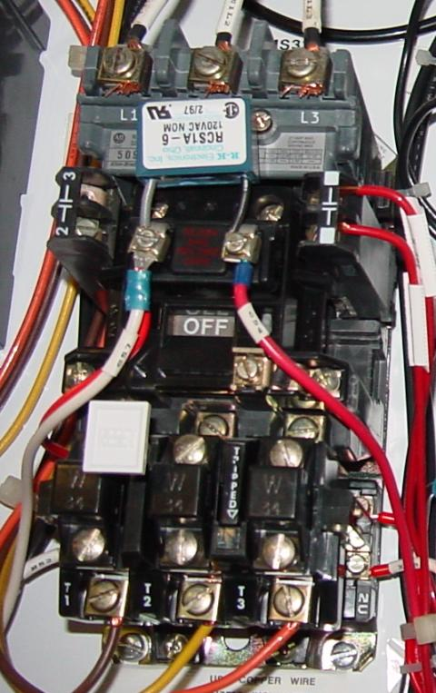
La energía trifásica de 480 voltios de CA llega a los tres contactos normalmente abiertos en la parte superior del contactor a través de terminales de tornillo etiquetados como "L1", "L2" y "L3" (el terminal "L2" está oculto detrás de un circuito "amortiguador" de forma cuadrada conectado a través de los terminales de la bobina del contactor). La energía al motor sale del conjunto del calentador de sobrecarga en la parte inferior de este dispositivo a través de terminales de tornillo etiquetados "T1", "T2" y "T3".
Las unidades de calentador de sobrecarga son bloques negros de forma cuadrada con la etiqueta "W34", que indica una respuesta térmica particular para una determinada potencia y temperatura nominal del motor eléctrico. Si se tuviera que sustituir el actualmente en servicio por un motor eléctrico de diferente potencia y/o temperatura nominal, las unidades de calentador de sobrecarga tendrían que ser reemplazadas por unidades que tuvieran una respuesta térmica adecuada para el nuevo motor. El fabricante del motor puede proporcionar información sobre las unidades calefactoras adecuadas a utilizar.
Un botón blanco ubicado entre los calentadores de línea "T1" y "T2" sirve como una forma de restablecer manualmente el contacto del interruptor normalmente cerrado a su estado normal después de haber sido activado por una temperatura excesiva del calentador. Las conexiones de los cables al contacto del interruptor de "sobrecarga" se pueden ver en la parte inferior derecha de la fotografía, cerca de una etiqueta que dice "NC" (normalmente cerrado). En esta unidad de sobrecarga en particular, una pequeña "ventana" con la etiqueta "Disparado" indica una condición de disparo mediante una bandera de color. En esta fotografía, no hay ninguna condición de "disparo" y el indicador parece claro.
Como nota a pie de página, los elementos calentadores se pueden usar como una resistencia de derivación de corriente cruda para determinar si un motor está consumiendo corriente o no cuando el contactor está cerrado. Puede haber ocasiones en las que esté trabajando en un circuito de control de motor, donde el contactor esté ubicado lejos del motor mismo. ¿Cómo se sabe si el motor está consumiendo energía cuando la bobina del contactor está energizada y se ha retirado la armadura? Si los devanados del motor están quemados, podría estar enviando voltaje al motor a través de los contactos del contactor, pero aún tener corriente cero y, por lo tanto, no habrá movimiento desde el eje del motor. Si no dispone de un amperímetro de pinza para medir la corriente de línea, puede tomar su multímetro y medir el milivoltaje en cada elemento calefactor: si la corriente es cero, el voltaje en el calentador será cero (a menos que el elemento calefactor esté abierto, en cuyo caso el voltaje a través de él será grande); Si hay corriente que llega al motor a través de esa fase del contactor, leerá un milivoltaje definido a través de ese calentador:
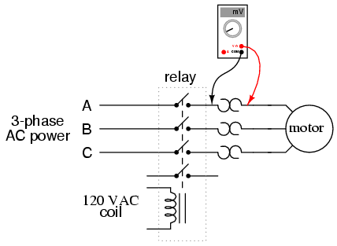
Este es un truco especialmente útil para solucionar problemas de motores de CA trifásicos, para ver si un devanado de una fase está quemado o desconectado, lo que resultará en una condición rápidamente destructiva conocida como "monofásico". Si una de las líneas que transportan energía al motor está abierta, no pasará corriente a través de ella (como lo indica una lectura de 0,00 mV a través de su calentador), aunque las otras dos líneas sí (como lo indican las pequeñas cantidades de voltaje que caen a través de los respectivos calentadores).
- REVISAR:
- A contactorEs un relé grande, generalmente utilizado para conmutar corriente a un motor eléctrico u otra carga de alta potencia.
- Los motores eléctricos grandes pueden protegerse contra daños por sobrecorriente mediante el uso decalentadores de sobrecarga and contactos de sobrecarga. Si los calentadores conectados en serie se calientan demasiado debido a una corriente excesiva, el contacto de sobrecarga normalmente cerrado se abrirá, desenergizando el contactor que envía energía al motor.
Time-delay relays
Algunos relés están construidos con una especie de mecanismo de "amortiguador" adjunto a la armadura que evita el movimiento completo e inmediato cuando la bobina se activa o desactiva. Esta adición le da al relé la propiedad deretraso de tiempoactuación. Se pueden construir relés de retardo de tiempo para retrasar el movimiento de la armadura al activar, desactivar o ambas las bobinas.
Los contactos del relé de retardo de tiempo deben especificarse no sólo como normalmente abiertos o normalmente cerrados, sino también si el retardo opera en la dirección de cierre o en la dirección de apertura. La siguiente es una descripción de los cuatro tipos básicos de contactos de relé de retardo.
Primero tenemos el contacto normalmente abierto y cerrado temporizado (NOTC). Este tipo de contacto normalmente está abierto cuando la bobina no está alimentada (desenergizada). El contacto se cierra aplicando energía a la bobina del relé, pero solo después de que la bobina haya sido alimentada continuamente durante el período de tiempo especificado. En otras palabras, eldirecciónEl movimiento del contacto (ya sea para cerrar o para abrir) es idéntico al de un contacto NO normal, pero hay un retraso encierredirección. Debido a que el retraso ocurre en la dirección de la activación de la bobina, este tipo de contacto también se conoce como contacto normalmente abierto.on-demora:
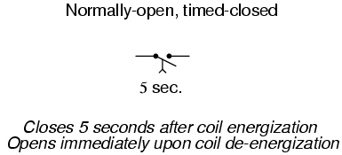
El siguiente es un diagrama de tiempos del funcionamiento de este contacto de relé:
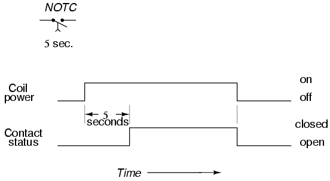
A continuación tenemos el contacto normalmente abierto y temporizado (NOTO). Al igual que el contacto NOTC, este tipo de contacto normalmente está abierto cuando la bobina no está alimentada (desenergizada) y se cierra mediante la aplicación de energía a la bobina del relé. Sin embargo, a diferencia del contacto NOTC, la acción de sincronización ocurre aldesenergizaciónde la bobina en lugar de al energizarla. Debido a que el retraso ocurre en la dirección de desenergización de la bobina, este tipo de contacto también se conoce como contacto normalmente abierto.off-demora:
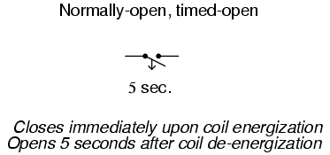
El siguiente es un diagrama de tiempos del funcionamiento de este contacto de relé:
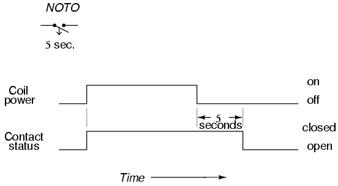
A continuación tenemos el contacto normalmente cerrado y abierto temporizado (NCTO). Este tipo de contacto normalmente está cerrado cuando la bobina no está alimentada (desenergizada). El contacto se abre con la aplicación de energía a la bobina del relé, pero solo después de que la bobina haya sido alimentada continuamente durante el período de tiempo especificado. En otras palabras, eldirecciónEl movimiento del contacto (ya sea para cerrar o abrir) es idéntico al de un contacto NC normal, pero hay un retraso en elaperturadirección. Debido a que el retraso ocurre en la dirección de la activación de la bobina, este tipo de contacto también se conoce como contacto normalmente cerrado.on-demora:
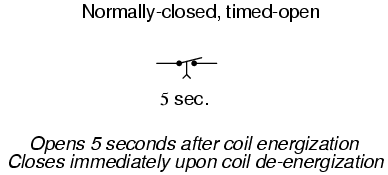
El siguiente es un diagrama de tiempos del funcionamiento de este contacto de relé:
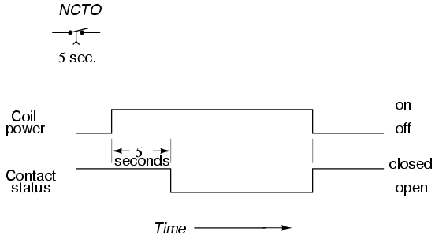
Finalmente tenemos el contacto normalmente cerrado, temporizado-cerrado (NCTC). Al igual que el contacto NCTO, este tipo de contacto normalmente se cierra cuando la bobina no está alimentada (desenergizada) y se abre mediante la aplicación de energía a la bobina del relé. Sin embargo, a diferencia del contacto de la NCTO, la acción temporal se produce cuandodesenergizaciónde la bobina en lugar de al energizarla. Debido a que el retraso ocurre en la dirección de desenergización de la bobina, este tipo de contacto también se conoce como contacto normalmente cerrado.off-demora:
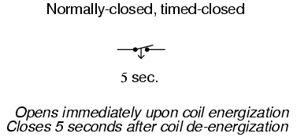
El siguiente es un diagrama de tiempos del funcionamiento de este contacto de relé:
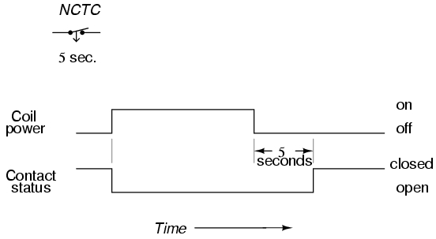
Los relés de retardo de tiempo son muy importantes para su uso en circuitos lógicos de control industrial. Algunos ejemplos de su uso incluyen:
- Control de luz intermitente (tiempo de encendido, tiempo de apagado): se utilizan dos relés de retardo de tiempo en conjunto para proporcionar un impulso de encendido/apagado de frecuencia constante de los contactos para enviar energía intermitente a una lámpara.
- Control de arranque automático del motor: los motores que se utilizan para alimentar generadores de emergencia a menudo están equipados con controles de "arranque automático" que permiten el arranque automático si falla la energía eléctrica principal. Para arrancar correctamente un motor grande, primero se deben arrancar ciertos dispositivos auxiliares y dejar que se estabilicen por un breve tiempo (bombas de combustible, bombas de aceite de prelubricación) antes de que se energice el motor de arranque del motor. Los relés de retardo ayudan a secuenciar estos eventos para un arranque adecuado del motor.
- Control de purga de seguridad del horno: antes de que un horno de combustión pueda encenderse de manera segura, el ventilador de aire debe funcionar durante un período de tiempo específico para "purgar" la cámara del horno de cualquier vapor potencialmente inflamable o explosivo. Un relé de retardo proporciona a la lógica de control del horno este elemento de tiempo necesario.
- Control de retardo de arranque suave del motor: en lugar de arrancar motores eléctricos grandes cambiando la potencia total desde una condición de parada total, se puede cambiar el voltaje reducido para un arranque "más suave" y menos corriente de entrada. Después de un retardo de tiempo prescrito (proporcionado por un relé de retardo de tiempo), se aplica plena potencia.
- Retraso en la secuencia de la cinta transportadora: cuando se disponen varias cintas transportadoras para transportar material, las cintas transportadoras deben iniciarse en secuencia inversa (la última primero y la primera al final) para que el material no se acumule en un transportador detenido o que se mueve lentamente. Para que las correas grandes alcancen la velocidad máxima, es posible que se necesite algo de tiempo (especialmente si se utilizan controles de motor de arranque suave). Por esta razón, generalmente hay un circuito de retardo dispuesto en cada transportador para darle el tiempo adecuado para alcanzar la velocidad máxima de la cinta antes de que comience la siguiente cinta transportadora que lo alimenta.
Los relés mecánicos de retardo más antiguos utilizaban amortiguadores neumáticos o disposiciones de pistón/cilindro lleno de líquido para proporcionar la "amortiguación" necesaria para retrasar el movimiento de la armadura. Los diseños más nuevos de relés de retardo de tiempo utilizan circuitos electrónicos con redes de resistencia-condensador (RC) para generar un retardo de tiempo y luego energizan una bobina de relé electromecánico normal (instantánea) con la salida del circuito electrónico. Los relés temporizadores electrónicos son más versátiles que los modelos mecánicos más antiguos y menos propensos a fallar. Muchos modelos proporcionan funciones de temporizador avanzadas como "un disparo" (un pulso de salida medido para cada transición de la entrada de desenergizada a energizada), "reciclaje" (ciclos repetidos de encendido/apagado de salida mientras la conexión de entrada esté energizada) y "vigilancia" (cambia de estado si la señal de entrada no se enciende y apaga repetidamente).
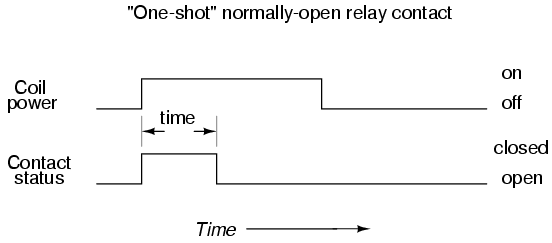
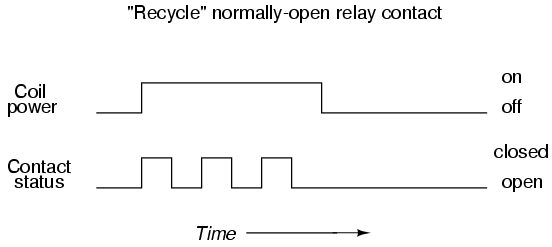
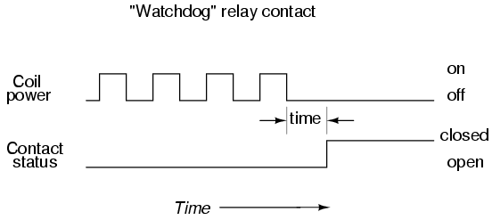
El temporizador "watchdog" es especialmente útil para monitorear sistemas informáticos. Si se utiliza una computadora para controlar un proceso crítico, generalmente se recomienda tener una alarma automática para detectar el "bloqueo" de la computadora (una parada anormal de la ejecución del programa debido a varias causas). Una manera fácil de configurar un sistema de monitoreo de este tipo es hacer que la computadora energice y desactive regularmente la bobina de un relé temporizador de vigilancia (similar a la salida del temporizador de "reciclaje"). Si la ejecución de la computadora se detiene por algún motivo, la señal que envía a la bobina del relé de vigilancia dejará de funcionar y se congelará en uno u otro estado. Poco tiempo después, el relé de vigilancia "se agotará" y señalará un problema.
- REVISAR:
- Los relés de retardo de tiempo se construyen en estos cuatro modos básicos de operación de contacto:
- 1: Normally-open, timed-closed. Abbreviated "NOTC", these relays open immediately upon coil de-energization and close only if the coil is continuously energized for the time duration period. Also called normalmente abierto, con retardorelés.
- 2: Normally-open, timed-open. Abbreviated "NOTO", these relays close immediately upon coil energization and open after the coil has been de-energized for the time duration period. Also called normalmente abierto, retardo de apagadorelés.
- 3: Normally-closed, timed-open. Abbreviated "NCTO", these relays close immediately upon coil de-energization and open only if the coil is continuously energized for the time duration period. Also called normalmente cerrado, con retardorelés.
- 4: Normally-closed, timed-closed. Abbreviated "NCTC", these relays open immediately upon coil energization and close after the coil has been de-energized for the time duration period. Also called normalmente cerrado, retardo de apagadorelés.
- Un tragoLos temporizadores proporcionan un único pulso de contacto de duración especificada para cada activación de la bobina (transición de la bobina).offenrollaron).
- ReciclarLos temporizadores proporcionan una secuencia repetida de pulsos de contacto de encendido y apagado siempre que la bobina se mantenga en un estado energizado.
- Perro guardiánLos temporizadores accionan sus contactos sólo si la bobina no puede secuenciarse continuamente entre encendido y apagado (activada y desactivada) a una frecuencia mínima.
Protective relays
Un tipo especial de relé es aquel que monitorea la corriente, el voltaje, la frecuencia o cualquier otro tipo de medición de energía eléctrica, ya sea desde una fuente generadora o hacia una carga, con el fin de activar un disyuntor para que se abra en caso de una condición anormal. Estos relés se conocen en la industria de la energía eléctrica comorelés de protección.
Los disyuntores que se utilizan para encender y apagar grandes cantidades de energía eléctrica son en realidad relés electromecánicos. A diferencia de los disyuntores que se encuentran en uso residencial y comercial, que determinan cuándo dispararse (abrirse) mediante una tira bimetálica en su interior que se dobla cuando se calienta demasiado debido a una sobrecorriente, los disyuntores industriales grandes deben recibir "indicaciones" mediante un dispositivo externo cuando deben abrirse. Estos disyuntores tienen dos bobinas electromagnéticas en su interior: una para cerrar los contactos del disyuntor y otra para abrirlos. La bobina de "disparo" puede ser energizada por uno o más relés de protección, así como por interruptores manuales, conectados al interruptor de alimentación de 125 voltios CC. Se utiliza energía CC porque permite que un banco de baterías suministre energía de cierre/disparo a los circuitos de control del interruptor en caso de una falla completa de energía (CA).
Los relés de protección pueden monitorear grandes corrientes de CA mediante transformadores de corriente (CT), que rodean los conductores portadores de corriente que salen de un disyuntor, transformador, generador u otro dispositivo grande. Los transformadores de corriente reducen la corriente monitoreada a un rango secundario (salida) de 0 a 5 amperios CA para alimentar el relé de protección. El relé de corriente utiliza esta señal de 0 a 5 amperios para alimentar su mecanismo interno, cerrando un contacto para cambiar la alimentación de 125 voltios CC a la bobina de disparo del disyuntor si la corriente monitoreada se vuelve excesiva.
Del mismo modo, los relés de voltaje (de protección) pueden monitorear altos voltajes de CA mediante transformadores de voltaje o potencial (PT) que reducen el voltaje monitoreado a un rango secundario de 0 a 120 voltios de CA, típicamente. Al igual que los relés de corriente (de protección), esta señal de voltaje alimenta el mecanismo interno del relé, cerrando un contacto para cambiar la alimentación de 125 voltios CC a la bobina de disparo del disyuntor si el voltaje monitoreado se vuelve excesivo.
Existen muchos tipos de relés de protección, algunos con funciones altamente especializadas. Tampoco todos monitorean el voltaje o la corriente. Sin embargo, todos comparten la característica común de emitir una señal de cierre de contacto que se puede utilizar para conmutar la alimentación a una bobina de disparo del interruptor, una bobina de cierre o un panel de alarma del operador. La mayoría de las funciones de los relés de protección se han clasificado en un código numérico estándar ANSI. Aquí hay algunos ejemplos de esa lista de códigos:
Números de designación de relés de protección ANSI
12 = Overspeed 24 = Overexcitation 25 = Syncrocheck 27 = Bus/Line undervoltage 32 = Reverse power (anti-motoring) 38 = Stator overtemp (RTD) 39 = Bearing vibration 40 = Loss of excitation 46 = Negative sequence undercurrent (phase current imbalance) 47 = Negative sequence undervoltage (phase voltage imbalance) 49 = Bearing overtemp (RTD) 50 = Instantaneous overcurrent 51 = Time overcurrent 51V = Time overcurrent -- voltage restrained 55 = Power factor 59 = Bus overvoltage 60FL = Voltage transformer fuse failure 67 = Phase/Ground directional current 79 = Autoreclose 81 = Bus over/underfrequency
- REVISAR:
- Los disyuntores eléctricos grandes no contienen en sí mismos los mecanismos necesarios para dispararse (abrirse) automáticamente en caso de condiciones de sobrecorriente. Se les debe "decir" que se disparen mediante dispositivos externos.
- Relés de protecciónson dispositivos construidos para activar automáticamente las bobinas de actuación de grandes disyuntores eléctricos bajo ciertas condiciones.
Solid-state relays
Por muy versátiles que puedan ser los relés electromecánicos, sufren muchas limitaciones. Pueden ser costosos de construir, tener un ciclo de vida de contacto limitado, ocupar mucho espacio y cambiar lentamente, en comparación con los dispositivos semiconductores modernos. Estas limitaciones son especialmente ciertas para los contactores relés de potencia de gran tamaño. Para abordar estas limitaciones, muchos fabricantes de relés ofrecen relés de "estado sólido", que utilizan una salida SCR, TRIAC o transistor en lugar de contactos mecánicos para conmutar la alimentación controlada. El dispositivo de salida (SCR, TRIAC o transistor) está acoplado ópticamente a una fuente de luz LED dentro del relé. El relé se enciende energizando este LED, generalmente con alimentación CC de bajo voltaje. Este aislamiento óptico entre la entrada y la salida rivaliza con lo mejor que pueden ofrecer los relés electromecánicos.
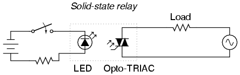
Al ser dispositivos de estado sólido, no hay piezas móviles que se desgasten y pueden encenderse y apagarse mucho más rápido de lo que puede moverse cualquier armadura de relé mecánico. No se producen chispas entre los contactos ni problemas de corrosión de los contactos. Sin embargo, los relés de estado sólido siguen siendo demasiado caros para incorporar corrientes nominales muy altas, por lo que los contactores electromecánicos continúan dominando esa aplicación en la industria actual.
Una ventaja significativa de un relé SCR o TRIAC de estado sólido sobre un dispositivo electromecánico es su tendencia natural a abrir el circuito de CA sólo en un punto de corriente de carga cero. Porque los SCR y TRIAC sontiristores, su histéresis inherente mantiene la continuidad del circuito después de que el LED se desactiva hasta que la corriente CA cae por debajo de un valor umbral (elmanteniendo la corriente). En términos prácticos, lo que esto significa es que el circuito nunca se interrumpirá en medio de un pico de onda sinusoidal. Tales interrupciones inoportunas en un circuito que contiene una inductancia sustancial normalmente producirían grandes picos de voltaje debido al colapso repentino del campo magnético alrededor de la inductancia. Esto no sucederá en un circuito interrumpido por un SCR o TRIAC. Esta característica se llamaconmutación de cruce por cero.
Una desventaja de los relés de estado sólido es su tendencia a fallar "en cortocircuito" en sus salidas, mientras que los contactos de los relés electromecánicos tienden a fallar "abiertos". En cualquier caso, es posible que un relé falle en el otro modo, pero estas son las fallas más comunes. Debido a que un estado de "fallo abierto" generalmente se considera más seguro que un estado de "fallo cerrado", los relés electromecánicos todavía se prefieren a sus homólogos de estado sólido en muchas aplicaciones.
Lecciones en circuitos eléctricoscopyright (C) 2000-2023 Tony R. Kuphaldt, según los términos y condiciones delCC BY License.